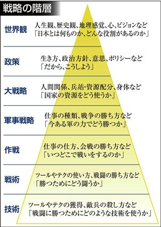
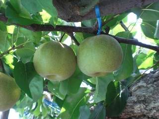

コーチング入門 修了レポート
Table of Contents
1. リフレクション、学び・変化
1.1. 【コーチング】事始め
本講座を受けての一番の学びは、 【コーチング】を知り、触れ、いきなり実践もできたことです。
そのいきなりの実践の3週間での大きな変化は以下の2点です。
順に詳細を記します。
1.1.1. 傾聴が最重要だと知ったこと
1.1.1.1. 受講前
私の実践の場はITエンジニアリングの職場でのOJTであるため、 正解を教えなければならない場面も多々あり、 【コーチング】よりも【ティーチング】（※1）寄りなのかもしれません。
（※1. 【コーチング】と【ティーチング】の違いも分かっていないまま、無責任に書いております。 正解を教える、正解を導く方法を教えるくらいの意味でしょうか。）
しかし、たとえ【ティーチング】寄りだとしても、 これまでは以下の傾向があったように思い出されます。
- 言語による論理を相手に求め、非言語的メッセージを軽視していた。
- 時間の制限もあり、解へ誘導していた。
事実、直近の今夏の、半年に一度の人事面談の場では、
一部の者とは非常に仲が良いが、 一部の若い者から『早川さんはそっけない、恐い』と言われている
との伝達を上司から受けました。 人事考課には"社会性"という項目があるのですが、平均値以下の評価でした。 恐らく、四角四面で、できれば一緒には働きたくないヒトであり、 それらがオブラートに包まれ『そっけない』、『恐い』との言葉になったのでしょう。
さらに自白すれば、 若い人にマウンティングできているかどうかを確認するために、 実は非言語的メッセージもちゃんと読み取っていたのでしょう。 自覚はほぼ無かったのですが、けっこう嫌なヤツだったかもしれません。
それでも『そっけない』とか『恐い』とオブラートに包まれているうちは、 まだ関係性が回復可能かもしれないとの望みを抱き、本講座の受講した次第です。
1.1.1.2. 受講後
受講後は以下の点を心掛けるようになりました。
- 相手が喋り出すのを待つ
- 相手が考え、悩んでいるのを待つ
つまりは「待つ」ことなのですが、単純にの時間の尺度上、待つだけではなく、
- 傍らで見守る
- 共に歩む
- 寄り添う
そういった意識が芽生えました。 中でも 「寄り添う」 の語が一番しっくりきます。
それらの意識の具体的な現れとしてか、 合いの手のレパートリーが増えた実感があります。 これまでは以下のような中立的、無味乾燥なものがほとんどでした。
- 頷き
- 「うんうん」、「ふむふむ」
- 「yes!」
- 「なるほど～」
しかし今では以下のような相手の心情を代弁する言葉も繰り出せるようになりました。
- 「大変だよね～」
- 「難しいよね～」
- 「キビシー」
- 「うわ～」
- 「ゲゲゲーッ！」
これまでは単純な頷きの合いの手にすらちょっと懐疑的でしたし、 上記のような心情の代弁に至っては道化師のすることだとバカにしていました。 それが本講座を通じて一皮剥けました。ありがとうございます。
1.1.2. 関係性の土台作りが大前提だと知ったこと
関係性の土台作りが【コーチング】の大前提であることは薄々分かっておりましたが、 職場ですと指示命令系統があるため、 おなざりにしていた点でした。
改めて、関係性の土台作りに取り組みましたが、 一朝一夕には築けないので、 まずは単純接触効果を狙い、「おはようございます」や「オッス！」、 「儲かりまっか！」といった挨拶から始めました。
行動のレベルがまるで小学生で、 40歳過ぎのいいオッサンが書く内容とは思えませんが、 まずはここから。
私の職場では在宅勤務でも出社でもOKなのですが、 挨拶するために、毎日出社いたしました。 （徒歩でも40分程度なので良い運動にもなります。） 朝の挨拶は無前提・無条件に行えるのですが、難しいのが日中の雑談でした。
いまの若い人は真面目な人が多く、雑談しているのを（本当の）上司に見咎められるのを恐れているようでした。 そこで、上司にまず声を掛けて、隣席の若い人も巻き込む方式を取りました。
また、雑談とは言え、自由に発言することに困難を感じたり緊張してしまう様子が伺えたら、 相手に発言を強要せず、もっぱら自分がバカ話をするようにしました。 （いま思うと、yes・noで答えられる質問をすればよかったです。 お盆明けから実践してみます。）
中には、文字通り、朝夕の挨拶のみ、1日2回の挨拶しか交わさない相手もいますが、 それでも、自分で切り開いた関係だと達成感を感じました。
2. 行動宣言
2.1. 場数を踏む
とにかく僕には経験値が少な過ぎます。 優秀なパイロットの飛行時間が1万時間ならば、 僕はまだ地上でマニュアルを読んでいる段階です。せいぜいシミュレーターを10分くらい。
しかし、嬉しいことに、職場で【コーチング】の場を得られました。 プロジェクトマネージャー と 社内寺子屋 です。
2.1.1. プロジェクトマネージャー
万年平社員と覚悟していた僕にも、7月末からプロジェクトマネージャーのチャンスが与えられました。
小規模は非常に小さいです。
| 期間 | 2ヶ月 | |
| 人数 | X人 | 機密事項として伏せさせて頂きます。 |
| 契約額 | Y兆円 | 機密事項として伏せさせて頂きます。 |
小規模でも、プロジェクトマネージャーおよび【コーチ】の成長の場として、ありがたく存分に活用したいと思います。
2.1.1.1. 目標: メンバーのモチベーションの涵養
【コーチ】としての目標はメンバーのモチベーションを涵養することです。
プロジェクトマネージャーとしての最低限の目標はもちろん納期の遵守です。
そのためには機械化（自動化）や増員、長時間労働（残業）などの手法がありますが、 メンバーの勤務中の集中力を高め、それにより作業効率を向上できればベストです。
そのためにモチベーションを涵養すべく、【コーチング】を試行錯誤してみます。
- モチベーションの拠り所 = 仲間と共に働く喜び
モチベーションの拠り所を分解すると、以下の点が浮かびます。
- 金銭面
- 仕事を通じた学び
- 仕事を通じた自己効用感
- 作られるモノの社会的意義
- 仲間と共に働く喜び
これらの中で僕が【コーチ】として関与できそうなのは最後の2つで、 特に末尾の「仲間と共に働く喜び」に注力してみます。
プロジェクトのメンバーの内訳は以下の通りで、 プロジェクトマネージャーの視点からだと、スキルに未知の部分があり不安ですが、 【コーチ】の視点からだと、ほぼゼロからの関係性構築になるので、 どの程度の仲になれるかは、僕の行動次第でしょう。 不幸中の幸い、嬉しい悲鳴です。
- 1人: 2年ほど同じ部署。友好的な関係だが、個人的な付き合いはない。
- その他の方: このプロジェクトで初めて顔を合わせた。
2.1.1.2. 大方針「寄り添い」
何が起こるか分かりませんが、大方針は「寄り添い」です。
- トラブルが発生したときこそ、相手の話を最後まで聞く。
- トラブルが発生したら、一緒に解決する。
- かつ、時には厳しいことも言う。
- これが「ストレッチ」な目標になりそうです。
2.1.2. 社内寺子屋
課長に相談し、（教える題材は）なんでもアリの「寺子屋」を開けることになりました。 週2回、30分ずつ。
下請けの会社なので、社員を教育する余裕（お金、仕組み、マインド）がまだまだ乏しく、 このままでは若者の将来が危いと懸念され、 コミットできない自分に忸怩たる思いがありました。 そこで昨年度から、課長に隠れて、少数の懇意な若者と 仕事術の本を輪読することをメインに、勉強会を開いていました。 しかし、というかもちろん、それはバレており、 今回、改めて相談してみると、課長も同じ危惧を抱いており、 晴れて堂々と開催できることになりました。
課長が若者と 1 on 1 で話してみると 僕たちベテランには思いもよらない点で若者が躓いていたとのことなので、
- 一人ひとりの躓いに対して【コーチング】しつつ、
- 【グループ・コーチング】もし、
- 技術面では教えることで自分も学び直せる
と、いま、水を得た魚の思いです。
技術面は、まずは、 プログラミング入門やエクセルの（効率的な）使い方、google mailの（効率的な）使い方、 果ては漢字変換の（効率的な）方法といった、 戦略の7階層で言うところの一番下の "技術" （奥山, 2012）から始めようと考えています。 躓いた点の相談だけだとお互い息も詰まりそうなので、 実際に手を動かせる課題があることで、 関係の構築が進むと期待しています。

2.1.2.1. 与太話、命名「梨下村塾」！
そんな思いがあるので、吉田松陰先生の松下村塾になぞらえて、「梨下村塾」と名付けてみました。
- 「松」ではなく「梨」にしたのは、私の出身が埼玉県久喜市であり、梨の生産が盛んだからです。
- また、私の姉は「梨紗」と申します。久喜市出身の父親が「梨」の字を当てました。
- つまりは、姉への、引いては家族への敬愛も含んでおります。
- さらには、韓国には 梨花女子大学という名門校もありますね。
- 音も同じ「リカ」です。
- もちろん、それらも意識した命名です。

（画像は右のサイトより拝借しました。https://www.city.kuki.lg.jp/smph/kurashi/nougyou/nousanbutsu/nashi.html）
2.1.2.2. 距離感、心理的被影響性? むしろ巻き込まれてやらーー！！ 俺が隊長だーー！！
心理的被影響性の話題が何度か出ました。 プロフェッショナルコーチとしては重要な概念なのでしょう。
しかし、僕の立ち位置はプロジェクトマネージャーであり、社内の教育係です。 現場で一緒に取り組む 「隊長」 という言葉も講義か放課後で挙げられておりました。 その言葉、拝借いたします。頂き
僕は 「隊長」 ですので、むしろ巻き込まれてやります。それが教育ですよ！！！！（昭和スクールウォーズ風w）
その熱意の源泉はどこかというと、繰り返しになりますが、若者の将来への危惧です。 就業中のちょっとした寺小屋だけでは全然足りなくて、 出社前、退社後、土日休日、受験生のように寸暇を惜しんで学ばねば（※2）、 日本のITエンジニアなんて、20年後には年収200万になっちゃうよ、 という危機感があるからです。 （※2. 自分の不勉強は棚に上げております。） なので、出社前、退社後、土日休日、いつでも寄り添えるように、 会社から支給されているスマフォにいつでも連絡をくれと伝えてあります。
まあ、職場での話なので、業務外の時間を取られる以外の面では、 クライアントに心理的に巻き込まれるようなトラブルはそもそも無いか、 あっても借金や交通事故くらいのものでしょう。 さらに、借金や交通事故だったら、僕は役者不足で、 部門や事業部が速やかに対応するでしょう。
（自分で切り出しておいて、尻切れの悪い話になってしまいました。すみません。）
2.2. SNS時代の学びに飛び込む。習うよりも慣れろ。
2.2.1. 内なる学び
受講して気付いたことには、自分自身の内面として以下の2点があります。
2.2.1.1. 自分は怠惰である
本講座の受講は誰に強制されたものでもなく、 また当初は高い熱量で取り組み始めたのですが、 あはれ三日坊主に終わり、 第2回目以降はリフレクションなど全く提出せずじまいでした。
リフレクションや行動宣言を提出しなくても「怒られない」し、 減点もないのでイイや、情けなくも考えておりました。 （怒られるから行動するという行動原理が【コーチング】の理念に反するなと、 いまさらながら気付きます。）
2.2.1.2. 自分は評価されることに怯懦である
怠惰の一部分は評価されることを恐れる意気地の無さに要因があるのかもしれません。
チームタクトや facebook messangeでは、 義務的なものを除くと、自発的な投稿はゼロでした。 他の方の提出物にコメントすることもありませんでした。 また、第2回目・第3回目の講義のリフレクションは書き始めたけれども、 推敲叶わず、放り投げてしまいました。
20年以上昔の話になりますが、受験勉強の観点では僕は優等生だったのですが、その裏返しとして、 不完全や出来損ないのものを人から評価されるのを恐れるマインドになってしまいました。 ゆえに、大学の成績は滅茶苦茶で、教授陣の恩義で何とか卒業させて頂いた経緯があります。 社会に出た後もそれを克服できず、職場の仲間にどこか胸襟を開けず、 出世できないとか、恋人ができないのもそのためでしょう。
そして、今回の受講でも評価されることに怯懦でした。
前出の『リフレクション、学び・変化』の『関係性の土台作りが大前提だと知ったこと』の項目で
（若い人が）雑談とは言え、自由に発言することに困難を感じたり緊張してしまう様子が伺えたら、
なんて上から目線で書いていましたが、これはまさに自分のことでした。
2.2.2. SNS時代の学び: output & reviewed
2.2.2.1. 【コーチング】は、客観的な論理を駆使するロボット的に操作ではなく、全人格での対峙である。
【コーチング】に話を戻しますと、講義中に
- 【コーチング】と心中する気はない
- 【コーチング】はコミュニケーションの一部
といった言葉が発せられたのを記憶しております。 それらを僕の言葉で勝手に言い換えたのが、上の見出しに書いた 『全人格での対峙』 です。
2.2.2.2. 世間、世人に揉まれるためのSNS
2つの内なる学びと全人格での対峙を併せて考えたとき、以下の論法が浮かびました。 （論理を飛躍をお許しください。）
- 良いコーチになるには人格を磨かねばならない。
- 人格を磨くには、世間、世人に揉まれるしかない。
- 怠惰や怯懦もその過程で矯められる……はず。
- 人と約束したり人から期待されたら強制力が働くので、やらざるを得ない。
- やっていくうちに性格も矯めされる？
そして、世間、世人に揉まれるための場を考えたとき、職場以外では、SNSが手軽に感じます。
その他の場はちょっと後ろ向きになってしまいます。
- 家族: 接触頻度が低いので除外。
- 近隣: 過去15年間、両隣以外は完全に没交渉なので、今から関わりを作り始めるのは 正直なところ heavy!
- 地域（近隣よりも広い範囲）: う～ん、よく分かりません。
SNSが手軽とは言え、真摯に GIVE & TAKE しなければならず、 全く気軽ではなく、むしろ challenging に感じています。
- 姿勢
SNS時代の学びの方針として以下の姿勢で臨みます。
- どんどんアウトプットする
- どんどん失敗する
- レビューされる
- 批判される
- 批評される
- 批評を受けて、修正する。PDCA!
- 仲間のアウトプットを盗み読む（インプット）
- 仲間に助けを求める。ヘルプ！
- GIVE & TAKE
- どんどんアウトプットする
- 姿勢の下方修正
……と威勢よく書いたのですが、 『どんどん』という心構えに三日坊主の兆候が既に出ているので、最初から下方修正しておきます。
太字の部分が下方修正したところです。
- 定期的に アウトプットする
- 必ず定期的に
- 慣れるためにまずは週1回
- どんどん失敗する
- レビューされる
- 批判される
- 批評される
- 批評を受けて、修正する。PDCA!
- 仲間のアウトプットを盗み読む（インプットする）
- 仲間に助けを求める。ヘルプ！
- GIVE & TAKE
mixiなども含めると、SNSが出現して既に20年が経つというのに、 "SNS時代の学び"だなんて今更過ぎてお粗末ですが、 まずはここから。
- 定期的に アウトプットする
2.2.2.3. アウトプットの場
簡潔に記します。
- Almnai Community
- お世話になります。
- ブログ
- 放置していたブログがあるので、題名やデザインを変えて再開します。乞うご期待。
- 社内寺子屋で使った資料（機密でないもののみ）
- slideshare(スライドを共有する場)
- github（プログラムを共有する場)
- などなど
3. 謝辞
- 本間先生
- 胸を貸して頂きありがとうございました。
- 山口さん
- 包摂され、居場所を与えられ、安心できました。ありがとうございました。
- 原口さん
- 本間先生とは違った切り口で、放課後が愉しかったです。ありがとうございました。
- 同期の皆様
- ありがとうございました。そして、これからもよろしくお願いいたしします。
4. 参考文献
奥山真司, 2012/12/13, 戦略の階層を個人向けに修正 from 地政学を英国で学んだ https://geopoli.exblog.jp/19661333/